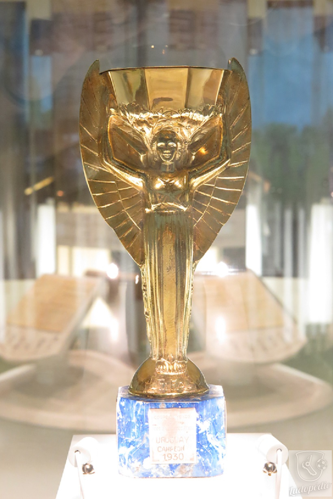

A história da Copa do Mundo
A primeira edição da Copa do Mundo foi realizada no Uruguai em 1930. Contou com a participação de apenas 13 seleções, que foram convidadas pela FIFA, sem disputa de eliminatórias, como acontece atualmente. A seleção uruguaia sagrou-se campeã e pôde ficar, por quatro anos, com a taça Jules Rimet. Nas duas copas seguintes (1934 e 1938) a Itália ficou com o título. Porém, entre os anos de 1942 e 1946, a competição foi suspensa em função da eclosão da Segunda Guerra Mundial.
Em 1950, o Brasil foi escolhido para sediar a Copa do Mundo. Os brasileiros ficaram entusiasmados e confiantes no título. Com uma ótima equipe, o Brasil chegou à final contra o Uruguai. A final, realizada no recém-construído Maracanã (Rio de Janeiro - RJ) teve a presença de aproximadamente 200 mil espectadores. Um simples empate daria o título ao Brasil, porém a celeste olímpica uruguaia conseguiu o que parecia impossível: venceu o Brasil por 2 a 1 e tornou-se campeã.
O Brasil sentiria o gosto de erguer a taça pela primeira vez em 1958, na copa disputada na Suécia. Neste ano, apareceu para o mundo, jogando pela seleção brasileira, aquele que seria considerado o melhor jogador de futebol de todos os tempos: Edson Arantes do Nascimento, o Pelé. Em 1970, no México, o Brasil tornou-se pela terceira vez campeão do mundo ao vencer a Itália por 4 a 1. Ao tornar-se tricampeão, o Brasil ganhou o direito de ficar em definitivo com a posse da taça Jules Rimet.
Em 2002, na Copa do Mundo do Japão / Coreia do Sul, liderada pelo goleador Ronaldo, o Brasil sagrou-se pentacampeão ao derrotar a seleção da Alemanha por 2 a 0. Esta vai ser a primeira edição a ter 3 países sedes e mais de 48 seleções participantes.

Taça Antiga da Copa do Mundo
Maiores Artilheiros
| Posição | Jogador | Seleção | Gols |
|---|---|---|---|
| 1º | Miroslav Klose | Alemanha | 16 |
| 2º | Ronaldo | Brasil | 15 |
| 3º | Gerd Müller | Alemanha | 14 |
| 4º | Just Fontaine | França | 13 |
| 5º | Messi | Argentina | 13 |
Curiosidades
A Copa do Mundo é o evento esportivo mais assistido do planeta, com bilhões de espectadores em todo o mundo. A primeira Copa do Mundo foi realizada em 1930 no Uruguai, e desde então, tem sido realizada a cada quatro anos, exceto durante a Segunda Guerra Mundial. O Brasil é o país com mais títulos, tendo vencido a competição cinco vezes. A Copa do Mundo de 1950, realizada no Brasil, é famosa por ter sido decidida em um jogo entre Brasil e Uruguai, onde o Uruguai venceu por 2 a 1, causando uma grande decepção para os brasileiros. A Copa do Mundo de 2018 na Rússia foi a primeira a ser transmitida em realidade virtual.